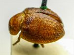
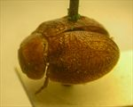
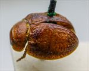
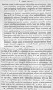

Click on images to enlarge
{kind=link}

Fig. 1. Paropsis vibex type specimen, lateral view
{kind=link}

Fig. 2. Paropsis vibex type specimen, dorsal view
{kind=link}

Fig. 3. Paropsis vibex type specimen
{kind=link}

Fig. 4. Paropsis vibex, description
Name
Paropsis vibex Blackburn, 1897
Corresponds to
= Ta231
Diagnosis and Notes
Blackburn (1897) deals with P. vibex as part of his 'subgroup iv' (i.e., those species without "strongly marked characters", and whose greatest height is considerably in front of the middle of the elytral margin). Within that group, he characterises it as:
AA. Prothorax not (or scarcely) explanate at the sides;
BB. The verrucae unpunctured or nearly so;
CC. Elytra having a sharply defined discal transverse wheal-like ridge;
D. The discal ridge concolorous with general surface of elytra;
EE. Prothorax evidently explanate at the sides.
This is very likely to be the same species as Ta231, which has a similar pattern of transverse wheal-like ridge and transverse wrinkles on the elytra, with the dorsal surface almost uniformly brown. The length of the type is within the size range of Ta231, as is the A-A/BL ratio, and the type locality of P. vibex is in the same area that Ta231 is found.
Type specimen
Location: BMNH
Label data: /“Type” (red-bordered circle)/ “6235 Geraldton T”/ “Blackburn coll. 1910-236.”/ “Paropsis vibex Blackb.”/.
Female; Length: 5.75 mm approx.; A-A: 0.96 mm.
A completely brown specimen with a transverse ridge across the centre of elytron, transversely-oriented verrucae also in front and behind this ridge.
Original description
Translation of original description (Figure 4) by ChatGPT, 04/2026:
Rather broadly ovate; very convex; with the greatest height (seen from the side) situated before the middle of the elytral margin; moderately shining; reddish-ferruginous; the elytra anteriorly (and posteriorly near the margin of the disc) indistinctly and irregularly somewhat pitchy. Head rather closely, somewhat roughly, but not strongly punctulate. Prothorax broader than long in the ratio of nearly 2½:1, widened from the apex to beyond the middle; scarcely transversely impressed behind the apex; uneven; rather sparsely and weakly punctulate (at the sides scarcely coarsely so); sides less rounded, scarcely flattened; posterior angles rounded. Scutellum closely and not very finely punctulate. Elytra not depressed beneath the humeral callus; transversely impressed behind the base; punctures somewhat arranged in rows, fairly close but weak (finer toward the apex, slightly coarser at the sides); furnished with rather numerous verrucae (absent in the post-basal impressed area, behind which they become confluent into a transverse ridge extending almost continuously from the suture to the lateral margin); interstices scarcely rugulose; marginal area scarcely distinct from the disc; inner margin of the humeral callus not more distant from the suture than from the lateral margin. Basal ventral segment sparsely and lightly punctulate. Length 2⅘ lines [~5.9 mm]; width 1⅘ lines [~3.8 mm].
References
Blackburn, T. 1897, "Revision of the genus Paropsis. Part II", Proceedings of the Linnean Society of New South Wales, vol. 22, 166-189 (page 179).
Copyright © 2026. All rights reserved.